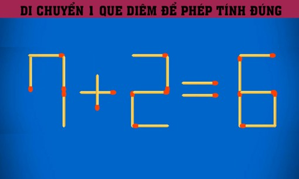

Mỹ – Iran đạt thỏa thuận về ngừng bắn, mở cửa eo biển Hormuz trong hai tuần
Mỹ và Iran đồng ý ngừng bắn trong hai tuần, Tehran sẽ cho phép tàu thuyền đi qua eo biển Hormuz trong thời gian này "với sự điều phối từ lực lượng vũ trăng".
Câu đố này hứa hẹn sẽ mang đến cho bạn những giây phút giải trí thật nhẹ nhàng. Đừng quá căng thẳng nhé, vì đây chỉ là một trò chơi sắp đặt đầy thú vị mà thôi. Chỉ cần bạn khéo léo di chuyển duy nhất 1 que diêm, trật tự toán học sẽ ngay lập tức được thiết lập lại một cách hoàn hảo.

Đây chính là lúc để bạn chứng minh đôi mắt tinh anh và tư duy sắc bén của mình trước bạn bè. Một chút thay đổi nhỏ thôi cũng đủ để biến một sai lầm thành một "chân lý" khiến ai cũng phải trầm trồ. Nào, hãy bắt đầu cuộc hành trình truy tìm đáp án và tận hưởng niềm vui khi trí tuệ được tỏa sáng nhé!

Mỹ và Iran đồng ý ngừng bắn trong hai tuần, Tehran sẽ cho phép tàu thuyền đi qua eo biển Hormuz trong thời gian này "với sự điều phối từ lực lượng vũ trăng".

Người dân Iran tập trung trên đường phố Tehran, vậy có và hô khẩu hiệu sau khi lệnh ngừng bắn hai tuần với Mỹ được công bố.

Nằm ở bộ nam eo biển Hormuz, cách Iran gần 34 km, bán đảo Musandam của Oman đang chứng kiến những hệ lụy về kinh tế và đời sống khi xung đột bùng phát.